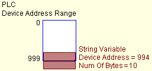

|
Indicates set up errors in the Driver, Equipment, or Variable.
Driver — There are multiple drivers set up with the same communication settings.
Equipment — Too much equipment is set up in the driver. Each driver supports a maximum of 48 equipment.
Another possible error is some of the equipment is set up with the same communication settings. For example, you may have set up some of the equipment with the same PLC identification number or IP address.
If you are using the Modbus Plus driver, in the Equipment Configuration dialog box the Equipment Address may be set to equipment on another network, which Modbus Plus does not allow.
Variable — The variable is set up with a device address beyond the maximum device address range. This error is common when working with String variables.
In the following example is a String variable that is 10 bytes long. Its device address is near the end of the maximum device address range, but the variable is too long and causes this error.

|